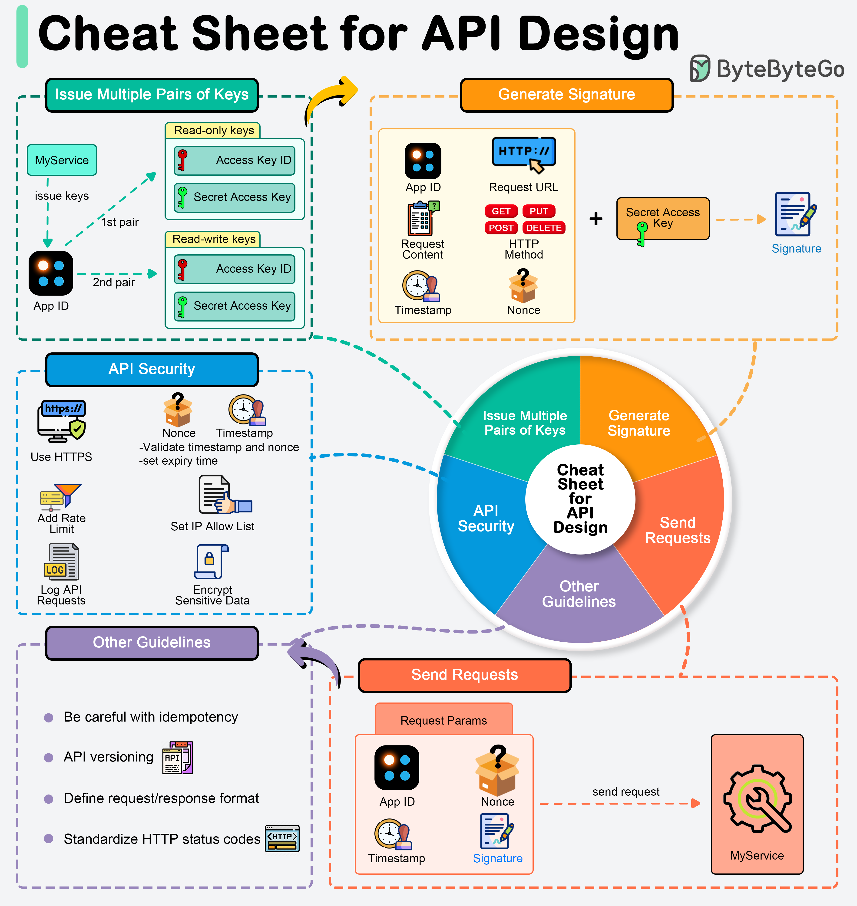

APIs expose business logic and data to external systems, so designing them securely and efficiently is important.
We normally generate one unique app ID for each client and generate different pairs of public key (access key) and private key (secret key) to cater to different authorizations. For example, we can generate one pair of keys for read-only access and another pair for read-write access.
Signatures are used to verify the authenticity and integrity of API requests. They are generated using the secret key and typically involve the following steps:
When designing an API, deciding what should be included in HTTP request parameters is crucial. Include the following in the request parameters:
To safeguard APIs against common vulnerabilities and threats, adhere to these security guidelines.